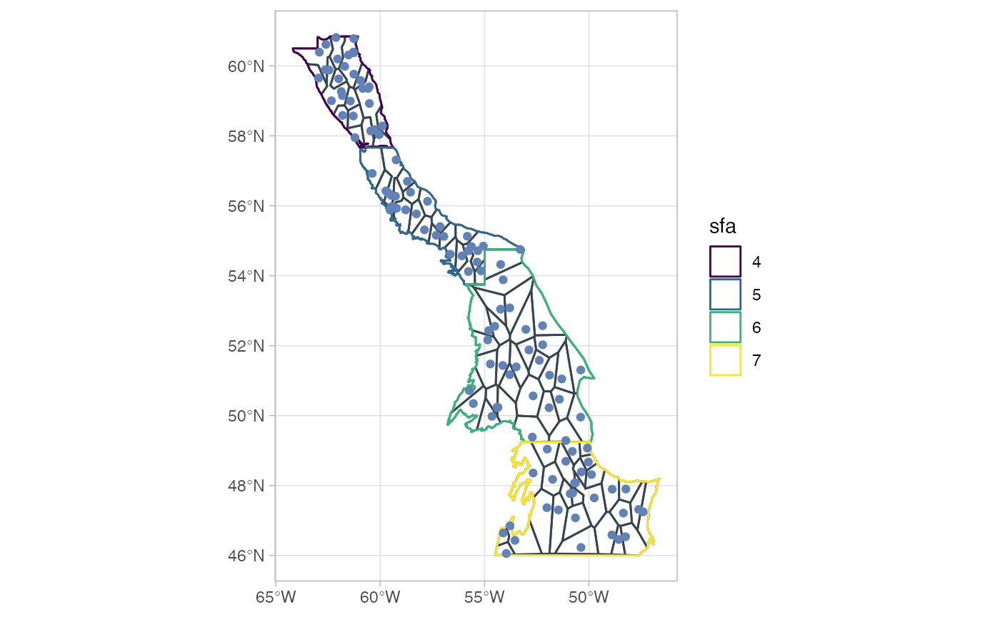
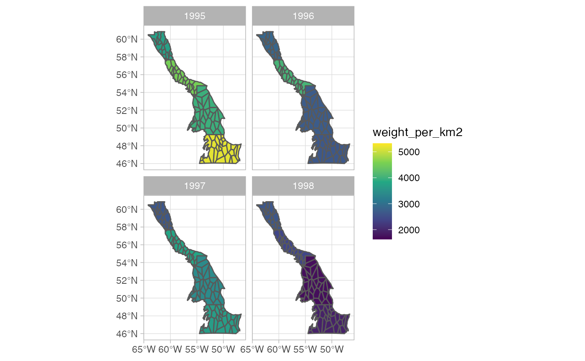

An example with simulated data
Source:vignettes/An_example_with_simulated_data.Rmd
An_example_with_simulated_data.Rmd
library(sspm)
#> Loading required package: sf
#> Linking to GEOS 3.10.2, GDAL 3.4.2, PROJ 8.2.1; sf_use_s2() is TRUE
#> Loading required package: mgcv
#> Loading required package: nlme
#> This is mgcv 1.8-40. For overview type 'help("mgcv-package")'.The following example shows the typical sspm workflow. Let’s first load the packages and the test data.
library(sspm)
library(mgcv)
library(dplyr)
#>
#> Attaching package: 'dplyr'
#> The following object is masked from 'package:nlme':
#>
#> collapse
#> The following objects are masked from 'package:stats':
#>
#> filter, lag
#> The following objects are masked from 'package:base':
#>
#> intersect, setdiff, setequal, union
borealis <- sspm:::borealis_simulated
predator <- sspm:::predator_simulated
catch <- sspm:::catch_simulated
sfa_boundaries <- sspm:::sfa_boundaries- The first step of the
sspmworkflow is to create asspm_boundaryfrom ansfobject, providing theboundarythat delineates the boundary regions. The object can then be plotted withspm_plot(as can mostsspmobjects).
bounds <- spm_as_boundary(boundaries = sfa_boundaries,
boundary = "sfa")
plot(bounds)
- The second step consists in wrapping a
data.frame,tibbleorsfobject into asspm_dataobject, with a few other pieces of relevant information, such as the name, dataset type (biomass, predictor or catch, depending on the type of information contained), time column and coordinates column (i notsf) and unique row identifier. Here we wrap the borealis dataset that contains the biomass information.
biomass_dataset <-
spm_as_dataset(borealis, name = "borealis",
density = "weight_per_km2",
time = "year_f",
coords = c('lon_dec','lat_dec'),
uniqueID = "uniqueID")
#> ℹ Casting data matrix into simple feature collection using columns: lon_dec, lat_dec
#> ! Warning: sspm is assuming WGS 84 CRS is to be used for casting
biomass_dataset
#>
#> ‒‒ Dataset borealis ‒‒
#> → [1800 rows, 9 columns]
#> → Density : weight_per_km2
#> → Time : year_f- We do the same with the predator data, which are of the predictor type.
predator_dataset <-
spm_as_dataset(predator, name = "all_predators",
density = "weight_per_km2",
time = "year_f",
coords = c("lon_dec", "lat_dec"),
uniqueID = "uniqueID")
#> ℹ Casting data matrix into simple feature collection using columns: lon_dec, lat_dec
#> ! Warning: sspm is assuming WGS 84 CRS is to be used for casting
predator_dataset
#>
#> ‒‒ Dataset all_predators ‒‒
#> → [10200 rows, 8 columns]
#> → Density : weight_per_km2
#> → Time : year_f- The
sspmworkflow relies on the discretization of the boundary objects, the default method being voronoi tesselation.
bounds_voronoi <- bounds %>%
spm_discretize(method = "tesselate_voronoi",
with = biomass_dataset,
nb_samples = 30)
#> ℹ Discretizing using method tesselate_voronoi
bounds_voronoi
#>
#> ‒‒ Boundaries (Discrete) ‒‒
#> → [4 rows, 3 columns]
#> ★ Points — [120 features, 10 columns]
#> ★ Patches — [92 features, 4 columns]
#> → Column : sfa
#> → Area : area_sfaThe other available method is triangulate_delaunay for delaunay triangulation. Here the a argument is used to set the size of the mesh (see RTriangle::triangulate for more details).
## Not run
bounds_delaunay <- bounds %>%
spm_discretize(method = "triangulate_delaunay", a = 1, q = 30)
bounds_delaunay- Plotting the object shows the polygons that have been created.
plot(bounds_voronoi)
## Not run
plot(bounds_delaunay)- The results of the discretization can also be explored with
spm_patches()andspm_points().
spm_patches(bounds_voronoi)
#> Simple feature collection with 92 features and 3 fields
#> Geometry type: POLYGON
#> Dimension: XY
#> Bounding box: xmin: -64.18658 ymin: 46.00004 xmax: -46.6269 ymax: 60.84488
#> Geodetic CRS: WGS 84
#> # A tibble: 92 × 4
#> sfa patch_id patch_area geometry
#> * <fct> <fct> [km^2] <POLYGON [°]>
#> 1 4 P1 5867. ((-62.56544 59.47292, -62.51885 60.2501, -62.42353…
#> 2 4 P2 6294. ((-61.15825 60.5856, -61.18083 60.61861, -61.16696…
#> 3 4 P3 1594. ((-61.98352 59.91756, -62.14032 59.90335, -62.3916…
#> 4 4 P4 1882. ((-61.60726 58.17744, -61.55968 58.21747, -61.5430…
#> 5 4 P5 1890. ((-61.54308 58.72455, -60.98005 58.90554, -60.9787…
#> 6 4 P6 2149. ((-62.81971 59.18792, -62.54312 59.42411, -62.5654…
#> 7 4 P7 2461. ((-61.55968 58.21747, -60.90082 58.30673, -60.7969…
#> 8 4 P8 1580. ((-60.85729 60.08226, -60.87677 60.07412, -61.2755…
#> 9 4 P9 7244. ((-60.30623 57.88979, -60.09616 58.23633, -60.1909…
#> 10 4 P10 1570. ((-59.93021 58.87649, -60.19091 58.62062, -60.0961…
#> # … with 82 more rows
spm_points(bounds_voronoi)
#> Simple feature collection with 120 features and 9 fields
#> Geometry type: POINT
#> Dimension: XY
#> Bounding box: xmin: -62.95014 ymin: 46.05739 xmax: -47.39935 ymax: 60.81292
#> Geodetic CRS: WGS 84
#> # A tibble: 120 × 10
#> # Groups: sfa [4]
#> year_f weight_per_km2 temp_at_bottom lon_dec lat_dec row uniqueID
#> * <fct> [kg/km^2] <dbl> <dbl> <dbl> <int> <chr>
#> 1 1995 7117. 3.88 -61.7 60.0 21 y1995s6r21
#> 2 1995 0 2.33 -59.2 57.3 23 y1995s6r23
#> 3 1995 0 1.03 -54.0 46.1 40 y1995s6r40
#> 4 1996 553. 2.97 -59.5 56.0 65 y1996s7r65
#> 5 1996 6538. 4.42 -61.3 60.8 102 y1996s5r102
#> 6 1996 2427. 2.17 -55.4 54.4 105 y1996s5r105
#> 7 1996 1945. 0 -48.4 47.2 138 y1996s4r138
#> 8 1997 0 0.649 -55.3 54.7 144 y1997s7r144
#> 9 1997 1430. 0 -54.4 50.2 149 y1997s7r149
#> 10 1997 0 5.18 -60.9 59.6 182 y1997s4r182
#> # … with 110 more rows, and 3 more variables: geometry <POINT [°]>, sfa <fct>,
#> # area_sfa [km^2]- The next step in this workflow is to smooth the variables to be used in the final
sspmmodel, by using spatial-temporal smoothers, by passing each dataset throughspm_smooth. Here we first smoothweight_per_km2as well astemp_at_bottom. Note that the boundary columnsfacan be used in the formula as the data will be first joined to the provided boundaries.
biomass_smooth <- biomass_dataset %>%
spm_smooth(weight_per_km2 ~ sfa + smooth_time(by = sfa) +
smooth_space() +
smooth_space_time(),
boundaries = bounds_voronoi,
family=tw)%>%
spm_smooth(temp_at_bottom ~ smooth_time(by=sfa, xt = NULL) +
smooth_space() +
smooth_space_time(xt = NULL),
family=gaussian)
#> ℹ Fitting formula: weight_per_km2 ~ sfa + smooth_time(by = sfa) + smooth_space() + smooth_space_time() for dataset 'borealis'
#> ℹ Note: response variable temp_at_bottom is NOT a biomass density variable
#> ℹ Fitting formula: temp_at_bottom ~ smooth_time(by = sfa, xt = NULL) + smooth_space() + smooth_space_time(xt = NULL) for dataset 'borealis'
biomass_smooth
#>
#> ‒‒ Dataset borealis (Mapped) ‒‒
#> → [1801 rows, 12 columns]
#> → Density : weight_per_km2
#> → Time : year_f
#> → Smoothed data : [2208 rows, 8 columns]
#> ★ Smoothed vars: temp_at_bottom — weight_per_km2- The smoothed results for any smoothed variables (listed in “smoothed vars” above) can be easily plotted:
plot(biomass_smooth, var = "weight_per_km2", log = FALSE)
#> Registered S3 method overwritten by 'ggforce':
#> method from
#> scale_type.units units You can also make a spatial plot
You can also make a spatial plot
plot(biomass_smooth, var = "weight_per_km2", use_sf = TRUE)
- We also smooth the
weight_per_km2variable in the predator data.
predator_smooth <- predator_dataset %>%
spm_smooth(weight_per_km2 ~ smooth_time() + smooth_space(),
boundaries = bounds_voronoi,
drop.unused.levels = F, family=tw, method= "fREML")
#> ℹ Fitting formula: weight_per_km2 ~ smooth_time() + smooth_space() for dataset 'all_predators'
predator_smooth
#>
#> ‒‒ Dataset all_predators (Mapped) ‒‒
#> → [10201 rows, 11 columns]
#> → Density : weight_per_km2
#> → Time : year_f
#> → Smoothed data : [3680 rows, 7 columns]
#> ★ Smoothed vars: weight_per_km2- Before we assemble the full model with our newly smoothed data, we need to deal with the catch data. We first load the dataset.
catch_dataset <-
spm_as_dataset(catch, name = "catch_data",
biomass = "catch",
time = "year_f",
uniqueID = "uniqueID",
coords = c("lon_dec", "lat_dec"))
#> ℹ Casting data matrix into simple feature collection using columns: lon_dec, lat_dec
#> ! Warning: sspm is assuming WGS 84 CRS is to be used for casting
catch_dataset
#>
#> ‒‒ Dataset catch_data ‒‒
#> → [2020 rows, 8 columns]
#> → Biomass : catch
#> → Time : year_f- We then need to aggregate this data. This illustrate using the
spm_aggregatefunctions. Here we usespm_aggregate_catch:
biomass_smooth_w_catch <-
spm_aggregate_catch(biomass = biomass_smooth,
catch = catch_dataset,
biomass_variable = "weight_per_km2",
catch_variable = "catch",
fill = mean)
#> ℹ Offsetting biomass with catch data using columns: weight_per_km2, catch
biomass_smooth_w_catch
#>
#> ‒‒ Dataset borealis (Mapped) ‒‒
#> → [1801 rows, 12 columns]
#> → Density : weight_per_km2
#> → Time : year_f
#> → Smoothed data : [2208 rows, 13 columns]
#> ★ Smoothed vars: temp_at_bottom — weight_per_km2
#> ★ Vars with catch: weight_per_km2_borealis_with_catch- Once data has been smoothed, we can assemble a
sspmmodel object, using one dataset of type biomass, one dataset of type predictor and (optionnaly) a dataset of type catch.
sspm_model <- sspm(biomass = biomass_smooth_w_catch,
predictors = predator_smooth)
#> ℹ Joining smoothed data from all datasets
sspm_model
#>
#> ‒‒ Model (2 datasets) ‒‒
#> → Smoothed data : [2208 rows, 14 columns]
#> ★ Smoothed vars: temp_at_bottom — weight_per_km2_all_predators — weight_per_km2_borealis
#> ★ Vars with catch: weight_per_km2_borealis_with_catch- Before fitting the model, we must split data into test/train with
spm_split.
sspm_model <- sspm_model %>%
spm_split(year_f %in% c(1990:2017))
sspm_model
#>
#> ‒‒ Model (2 datasets) ‒‒
#> → Smoothed data : [2208 rows, 15 columns] / [2116 train, 92 test]
#> ★ Smoothed vars: temp_at_bottom — weight_per_km2_all_predators — weight_per_km2_borealis
#> ★ Vars with catch: weight_per_km2_borealis_with_catch- To fit the model, we might be interested in including lagged values. This is done with
spm_lag.
sspm_model <- sspm_model %>%
spm_lag(vars = c("weight_per_km2_borealis_with_catch",
"weight_per_km2_all_predators"),
n = 1)
sspm_model
#>
#> ‒‒ Model (2 datasets) ‒‒
#> → Smoothed data : [2208 rows, 17 columns] / [2116 train, 92 test]
#> ★ Smoothed vars: temp_at_bottom — weight_per_km2_all_predators — weight_per_km2_borealis
#> ★ Vars with catch: weight_per_km2_borealis_with_catch — weight_per_km2_borealis_with_catch_lag_1
#> ★ lagged vars: weight_per_km2_all_predators_lag_1 — weight_per_km2_borealis_with_catch_lag_1- We can now fit the final spm model with
spm.
sspm_model_fit <- sspm_model %>%
spm(log_productivity ~ sfa +
weight_per_km2_all_predators_lag_1 +
smooth_space(by = weight_per_km2_borealis_with_catch) +
smooth_space(),
family = mgcv::scat)
#> ℹ Fitting SPM formula: log_productivity ~ sfa + weight_per_km2_all_predators_lag_1 + smooth_space(by = weight_per_km2_borealis_with_catch) + smooth_space()
#> Warning in estimate.theta(theta, family, G$y, linkinv(eta), scale = scale1, :
#> step failure in theta estimation
#> Warning in estimate.theta(theta, family, G$y, linkinv(eta), scale = scale1, :
#> step failure in theta estimation
#> Warning in estimate.theta(theta, family, G$y, linkinv(eta), scale = scale1, :
#> step failure in theta estimation
#> Warning in estimate.theta(theta, family, G$y, linkinv(eta), scale = scale1, :
#> step failure in theta estimation
#> Warning in estimate.theta(theta, family, G$y, linkinv(eta), scale = scale1, :
#> step failure in theta estimation
#> Warning in estimate.theta(theta, family, G$y, linkinv(eta), scale = scale1, :
#> step failure in theta estimation
#> Warning in estimate.theta(theta, family, G$y, linkinv(eta), scale = scale1, :
#> step failure in theta estimation
#> Warning in estimate.theta(theta, family, G$y, linkinv(eta), scale = scale1, :
#> step failure in theta estimation
#> Warning in estimate.theta(theta, family, G$y, linkinv(eta), scale = scale1, :
#> step failure in theta estimation
sspm_model_fit
#>
#> ‒‒ Model fit ‒‒
#> → Smoothed data : [2208 rows, 17 columns] / [2116 train, 92 test]
#> → Fit summary :
#>
#> Family: Scaled t(Inf,0.243)
#> Link function: identity
#>
#> Formula:
#> log_productivity ~ sfa + weight_per_km2_all_predators_lag_1 +
#> s(patch_id, k = 30, bs = "mrf", xt = list(penalty = pen_mat_space),
#> by = weight_per_km2_borealis_with_catch) + s(patch_id,
#> k = 30, bs = "mrf", xt = list(penalty = pen_mat_space))
#>
#> Parametric coefficients:
#> Estimate Std. Error t value Pr(>|t|)
#> (Intercept) -6.463e-01 7.031e-02 -9.192 < 2e-16 ***
#> sfa5 -5.305e-02 6.328e-02 -0.838 0.401995
#> sfa6 5.451e-02 8.101e-02 0.673 0.501124
#> sfa7 -3.978e-02 8.887e-02 -0.448 0.654459
#> weight_per_km2_all_predators_lag_1 -3.887e-05 1.114e-05 -3.490 0.000493 ***
#> ---
#> Signif. codes: 0 '***' 0.001 '**' 0.01 '*' 0.05 '.' 0.1 ' ' 1
#>
#> Approximate significance of smooth terms:
#> edf Ref.df F p-value
#> s(patch_id):weight_per_km2_borealis_with_catch 16.122 30 29.568 < 2e-16
#> s(patch_id) 6.499 29 0.447 0.000237
#>
#> s(patch_id):weight_per_km2_borealis_with_catch ***
#> s(patch_id) ***
#> ---
#> Signif. codes: 0 '***' 0.001 '**' 0.01 '*' 0.05 '.' 0.1 ' ' 1
#>
#> R-sq.(adj) = 0.548 Deviance explained = 55.4%
#> -REML = 2936.1 Scale est. = 1 n = 2024- Plotting the object produces a actual vs predicted plot (with TEST/TRAIN data highlighted.
plot(sspm_model_fit, train_test = TRUE, scales = "free")
#> Warning: Removed 92 rows containing missing values (geom_point).
- We can also extract the predictions.
preds <- predict(sspm_model_fit)
head(preds)
#> Simple feature collection with 6 features and 6 fields
#> Geometry type: POLYGON
#> Dimension: XY
#> Bounding box: xmin: -64.18658 ymin: 59.47292 xmax: -62.26589 ymax: 60.84335
#> Geodetic CRS: WGS 84
#> pred_log pred patch_id year_f sfa patch_area
#> 1 0.21007714 1.2337732 P1 1995 4 5866.769 [km^2]
#> 2 -0.01276639 0.9873148 P1 1996 4 5866.769 [km^2]
#> 3 -0.07327079 0.9293491 P1 1997 4 5866.769 [km^2]
#> 4 -0.08042404 0.9227250 P1 1998 4 5866.769 [km^2]
#> 5 -0.11154247 0.8944534 P1 1999 4 5866.769 [km^2]
#> 6 -0.12502102 0.8824784 P1 2000 4 5866.769 [km^2]
#> geometry
#> 1 POLYGON ((-62.56544 59.4729...
#> 2 POLYGON ((-62.56544 59.4729...
#> 3 POLYGON ((-62.56544 59.4729...
#> 4 POLYGON ((-62.56544 59.4729...
#> 5 POLYGON ((-62.56544 59.4729...
#> 6 POLYGON ((-62.56544 59.4729...We can also get the predictions for biomass by passing the biomass variable name.
biomass_preds <- predict(sspm_model_fit, biomass = "weight_per_km2_borealis")
head(biomass_preds)
#> Simple feature collection with 6 features and 8 fields
#> Geometry type: POLYGON
#> Dimension: XY
#> Bounding box: xmin: -64.18658 ymin: 59.47292 xmax: -62.26589 ymax: 60.84335
#> Geodetic CRS: WGS 84
#> # A tibble: 6 × 9
#> year_f patch_id sfa patch_area biomass_with_catch biomass biomass_density…
#> <dbl> <fct> <fct> [km^2] [kg] [kg] [kg/km^2]
#> 1 1995 P1 4 5867. NA NA NA
#> 2 1996 P1 4 5867. 21579955. 21575538. 3678.
#> 3 1997 P1 4 5867. 15515399. 15512857. 2645.
#> 4 1998 P1 4 5867. 14258215. 14256835. 2430.
#> 5 1999 P1 4 5867. 13823422. 13818260. 2356.
#> 6 2000 P1 4 5867. 13019809. 13015392. 2219.
#> # … with 2 more variables: biomass_density [kg/km^2], geometry <POLYGON [°]>We can also predict the biomass one step ahead.
biomass_one_step <- predict(sspm_model_fit, biomass = "weight_per_km2_borealis",
next_ts = TRUE)
#> ! Not all vars are lagged vars: weight_per_km2_borealis_with_catch
head(biomass_one_step)
#> Simple feature collection with 6 features and 5 fields
#> Geometry type: POLYGON
#> Dimension: XY
#> Bounding box: xmin: -64.18658 ymin: 58.17744 xmax: -60.85729 ymax: 60.84488
#> Geodetic CRS: WGS 84
#> # A tibble: 6 × 6
#> patch_id year_f sfa biomass patch_area geometry
#> <fct> <dbl> <fct> [kg] [km^2] <POLYGON [°]>
#> 1 P1 2019 4 NA 5867. ((-62.56544 59.47292, -62.51885 60.2…
#> 2 P2 2019 4 NA 6294. ((-61.15825 60.5856, -61.18083 60.61…
#> 3 P3 2019 4 NA 1594. ((-61.98352 59.91756, -62.14032 59.9…
#> 4 P4 2019 4 NA 1882. ((-61.60726 58.17744, -61.55968 58.2…
#> 5 P5 2019 4 NA 1890. ((-61.54308 58.72455, -60.98005 58.9…
#> 6 P6 2019 4 NA 2149. ((-62.81971 59.18792, -62.54312 59.4…- We can produce an array of plots, as timeseries or as spatial plots
plot(sspm_model_fit, log = T, scales = 'free')
#> Warning: Removed 1 row(s) containing missing values (geom_path).
#> Warning: Removed 92 rows containing missing values (geom_point).
plot(sspm_model_fit, log = T, use_sf = TRUE)
plot(sspm_model_fit, biomass = "weight_per_km2_borealis", scales = "free")
#> Warning: Removed 1 row(s) containing missing values (geom_path).
#> Warning: Removed 92 rows containing missing values (geom_point).
plot(sspm_model_fit, biomass = "weight_per_km2_borealis", use_sf = TRUE)
plot(sspm_model_fit, biomass = "weight_per_km2_borealis",
next_ts = TRUE, aggregate = TRUE, scales = "free", interval = T)
#> ! Not all vars are lagged vars: weight_per_km2_borealis_with_catch
#> Warning in matrix(qrc[-1], nrow(pm$X), ncol(pm$X) - 1, byrow = TRUE): non-empty
#> data for zero-extent matrix
#> Warning: Removed 2 row(s) containing missing values (geom_path).
#> Warning: Removed 8 rows containing missing values (geom_point).
#> Warning in max(ids, na.rm = TRUE): no non-missing arguments to max; returning
#> -Inf
#> Warning in max(ids, na.rm = TRUE): no non-missing arguments to max; returning
#> -Inf
#> Warning in max(ids, na.rm = TRUE): no non-missing arguments to max; returning
#> -Inf
#> Warning in max(ids, na.rm = TRUE): no non-missing arguments to max; returning
#> -Inf
#> Warning in max(ids, na.rm = TRUE): no non-missing arguments to max; returning
#> -Inf
#> Warning in max(ids, na.rm = TRUE): no non-missing arguments to max; returning
#> -Inf
#> Warning in max(ids, na.rm = TRUE): no non-missing arguments to max; returning
#> -Inf
#> Warning in max(ids, na.rm = TRUE): no non-missing arguments to max; returning
#> -Inf